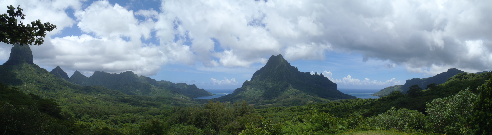
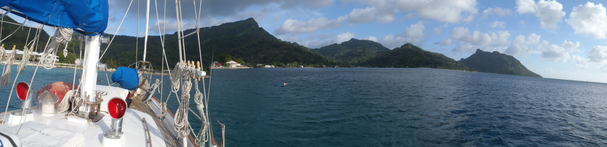
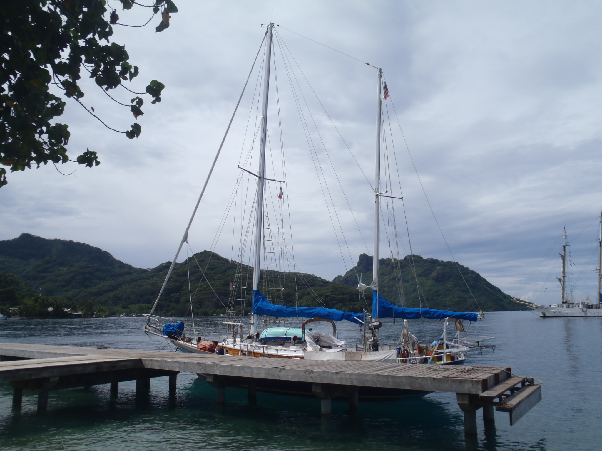
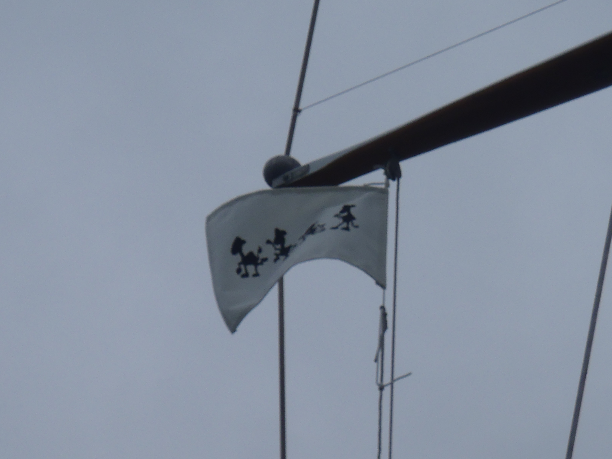

Windward Islands, Tahiti, Moorea
Then we were joined by Sky and his parents. After some time do get everyone used to the Polynesia time zone
and rythm, we went
for a sail, Sky's first sail! On December the
16th, we went back to Point Venus, which is sheltered and well protected from the
swell, and from which we can leave at any time.
And the next day, we set sail for Moorea. We went to the Opunohu Bay, on the North coast of Moorea. The bay
is two nautical miles deep, we went first to
Robinson Cove, close to the bottom of the bay, in the shade. But the shore was
definitely too buggy for the crew - and Skip Sky - so we weighed the anchor
and dropped it again in the Vaipeu anchorage, close to the entrance of the bay, just after the pass, in the
East. This one looks a lot like
what everyone pictures about Polynesia, white coral beaches, and crystal clear light blue waters... We do -
again - see the anchor sitting on the bottom.
Moorea looks like a mix of both the Marquesas and the Tuamotu. It's a volcanic island - it looks a bit like
Ua Pou from the distance - and it does have a reef,
and a lagoon, with all the fish you can expect. Snorkeling in there is just like watching a movie.
|
 Back from Moorea on December the 20th, against the wind - a steady 5 to 6 Beaufort
- but not too much swell.
We actually only had the sea of the wind, and that was enough for the majority of the crew... Little Sky was
OK, though. We moored again in
Arue, on a mooring of the Yacht Club de Tahiti.
Back from Moorea on December the 20th, against the wind - a steady 5 to 6 Beaufort
- but not too much swell.
We actually only had the sea of the wind, and that was enough for the majority of the crew... Little Sky was
OK, though. We moored again in
Arue, on a mooring of the Yacht Club de Tahiti.
The sea was quite tough - and whoever is not used to it finds quite a difference between what it actually is
and the flyers you might
have read - it does not quite match the idea that pops up in your head when you think "Tropical"...
We were carrying the
.
When securing the mooring, I noticed there was some slack in the bowsprit whisker-stays (mostly the
starboard one).
Investigating further, that was due to a big crack in the starboard
whisker-stay chainplate... The port one has a slight crack too.
Both of them will have to be replaced...
This has definitely happened during the last leg, between Moorea and Tahiti. Probably when we were pitching
in those seas,
a couple of time, the bowsprit was in the water, skewering the waves in the Moorea channel.
Then we wait... We experience the polynesian way to do business. We went to Techni Marine,
they can make the new chainplates, and they seem to know what they are talking about. We have to wait for
the quote, and the job should be done
shortly after that. The thing is that the guy in charge of the cutting machine is on vacation until Tuesday
(Dec 28th), good for him.
But let us not complain...,
at this time of the year it would have been the same in many places in the world, and being stuck here is
certainly not the worst.
We're visiting Pape'ete and its vicinity...
 The weather in Arue - where we are - reminds us a bit of Oyster Point, it can be pretty windy. But this is
the Trade Wind, and it is warm.
It rains during the squalls, but that (usually) does not last very long.
The weather in Arue - where we are - reminds us a bit of Oyster Point, it can be pretty windy. But this is
the Trade Wind, and it is warm.
It rains during the squalls, but that (usually) does not last very long.
We took a chance to visit the peninsula of Taiarapu (a.k.a. Tahiti Iti), the plateau of Taravao. Pauline
told us it looked like Normandy,
that's right. I'd rather say Switzerland though, it's way more sloppy than Normandy.
Anyhow, it's pretty nice... And just like in Napa Valley, it's always unusual to see cows grazing under palm
trees...
We drove all around the island, the North coast is bloody wild. There is some apparently sheltered places
though, close to the
Taravao isthmus (between Tahiti Nui and Tahiti Iti).
|
We got the new chainplates yesterday, as expected.
They're now in place, we're good to go. Corine is finishing the supplies, we're cleaning up, the idea is to
head off to Moorea
tomorrow. The weather is now gray and very rainy. We had squalls last night, which were said by local people
(Laura & Pauline) to be
the toughest they had seen here...
It's actually supposed to be the rainy season, right now.
|
 The forecast does not look good today..., it's anticipating heavy seas and strong winds (gusting up to 40
knots) in our zone.
The forecast does not look good today..., it's anticipating heavy seas and strong winds (gusting up to 40
knots) in our zone.
This weather is generated by a low pressure in the South West, moving East-South-East. It should be gone
soon, we'll wait.
The picture on the left shows the same area as the one above with a rainbow, during a squall. The wind
reached 35 knots in that one.
Anyhow, we are ready to go. We'll get another forecast tonight - if not earlier, and we'll see what we can
do.
|
Windward Islands, Moorea
Weather forecast is not as bad as yesterday, let's go!
The Yacht Club de Tahiti did not make us pay for the last day.
We leave the lagoon of Arue using the west channel, it's pretty narrow
(25 meters
at some point), but it's all right.
We're targeting Moorea, before heading to Huahine.
We still have a steady force 6, from the east; we're pretty much dead downwind. No significant swell,
all is right.
, we did it at 7 knots on average, fishtailing between the squalls.
And there we are, anchored almost in the same spot as last time, it is still as nice as it was.
|
The mystery of the fish with a prop...
 So we are back again in Moorea, at the entrance of Opunohu Bay, just like last time with Sky, Brendan &
Chloé.
So we are back again in Moorea, at the entrance of Opunohu Bay, just like last time with Sky, Brendan &
Chloé.
About last time, after she went snorkeling, Corine came back saying something like "I've seen some fish,
with a prop". Everyone else went like "Of course my horse", and had a good laugh..., but she insisted "Yes
it's true, it's definitely possible, why don't you guys believe me?". And everyone else went laughing
louder.
Well, there is a possible explanation, that seems to match.
There are those big sea snails called "lambis" (local people call them "sept doigts" - "seven fingers") all
over the lagoon in Moorea, they're pretty big,
the shell is about one foot long, and half a foot wide.
Some are covered with some kind of sea weed that grows in spirals...
And when the lambis moves, it's using its foot (some kind of an ugly tongue),
it's like hopping, leaving a track like a snail in the sand behind them.
So, if you see such a shell, covered with spiral sea weeds, hopping like that,
you can easily mistake it for some fish with a prop!
Mystery solved!
"Ah you see? I was right!"
|
|

|
Following Pascale & Yvan's advice, we went biking to the Belvedere, in Moorea, from which there is a
wonderful view on the bays
of Paopao (Cook) and Opunohu, with the Mount Rotui between them. For those who would do the same,
you need mountain bikes, and not beach bikes, like we had..., it's bloody sloppy!
But it's worth it, that's unique.
|
Leeward Islands, Huahine
Windward Islands to Leeward Islands, Moorea - Huahine
 It's an about 80 miles leg, that means a night at sea, but we want to arrive by daylight. That means we have
to calculate our departure time
carefully (just like if it was an exact science...). We start at noon.
It's an about 80 miles leg, that means a night at sea, but we want to arrive by daylight. That means we have
to calculate our departure time
carefully (just like if it was an exact science...). We start at noon.
As soon as the anchor is clear, a thunderstorm squall comes from nowhere to hit us, curtains of rain are
wrapping Moorea, and off we go!
The wind turns about North - that means we have to tack to exit the pass. Once outside, the wind slowly goes
back where it belongs, east.
But it remains quite strong, we have a steady 6 to 7 Beaufort for the first 6 hours of the leg. We're
carrying
,
we are always sailing around eight knots - with even a spike at 8.6, that is too fast! We will arrive in the
middle of the night, at that speed.
So we dropped the main, only carrying the
. But still doing about 7 knots at the beginning..., unbelievable!
The wind is easing a bit after that, good for us. We'll spend the rest of the night between 3 and 6 knots.
There is no moon, but we can see
Huahine is the dark. We enter the Avamoa Pass at 6:20am, and we anchor in the North of the bay shortly after
that, at 6:30am.
Eventually, we did OK with the boat speed, this time we've not had to wait before entering the place.
The island feels "smaller" than what we've seen so far. The town of Fare is for sure smaller than Los
Angeles...
There are 9 other boats with us in the anchorage, though it does not have a good reputation (bad holding,
gravel bottom).
Well, this reputation is justified, within a couple of hours, we are dragging the anchor, let's move out of
here.
We're going south, facing the Point Ofaiorio, on the reef side. This one holds good, we went to check,
snorkeling.
It's a good thing, because in the lee of the mountain, it's quite gusting sometimes; above 35 knots during
the night.
We've restarted the little outboard engine for the dinghy. I had to clean the carburetor, but it is -
surprisingly - still working
all right.
From this anchorage, there is ½ mile to go to the quay of Fare, and ¾ of a mile to go to
Xavier & Falai's. It's feasible rowing
(and we did it), but it is also all right with the engine! And with the squalls, it can be quite something.
What would be a cruise, if we did not have to use the dinghies (specially at night, against a rain
squall)?...
And ours is not even inflatable.
|
|

|
|
As it is closer to Fare, we came back to the place of our first anchoring attempt, on Wednesday (Jan
12th).
The anchor is locked under a coral patch, that should hold. This time, we're only four boats, including us.
|
Leeward Islands, Taha'a

 We spent more than ten great days in Huahine. People we met took us to places that are not in the guides,
maraes, motus..., they all
gave us the best picture they could of their island. Thanks to Pierre & Rautea, Jenny & Peewee,
Xavier & Falai, Frédérique, Pamela, Traore, and everyone around them!
We spent more than ten great days in Huahine. People we met took us to places that are not in the guides,
maraes, motus..., they all
gave us the best picture they could of their island. Thanks to Pierre & Rautea, Jenny & Peewee,
Xavier & Falai, Frédérique, Pamela, Traore, and everyone around them!
We leave for Taha'a on Tuesday, after refilling the water tank at the dock.
The passage between Huahine and Taha'a is just a bit more than 20 miles, and it's downwind. It went nicely.
We drop the anchor at about 4pm, just behind the motu north of the entrance of the Toahotu pass in Taha'a.
It's yet another landscape
here, the lagoon is wider, and shared with Raiatea.
It's again a bit like of we had anchored in a post card...
|
The next day, we sail around the north of the island, and we anchor again on the reef side, next to the
Tautau motu,
where there is a luxurious hotel, that seems to be empty for now. Some boats where here during the day, but
they left in the evening.
We have the anchorage for us alone... And we see the peaks of Bora-Bora over the motu.
The first squall to hit us nicely waited for us to be safely anchored.
Apparently we are lucky with the weather, it should be raining way more than that. It's probably because of
the Niña we have this year.
That would have been quite different with the Niño we had last year.
|
|
We go just across the lagoon, in the Tapuamu Bay, a nice little
anchorage. From there we rent a scooter, and go around the
south of the island.
The weather is gray - raining a bit - but not too hot.
About la Niña, the night has been quite something after that. It has been raining all night long, non
stop, with thunderstorms,
and heavy rain. In the morning, the water of the bay has the color of the Amazon, because of the little
river located at the back of the bay.
|
|

Another small leg, we go to the Taravana Yacht
Club, at the south tip of Taha'a.
For the occasion - as the weather was the right one for handicraft yesterday - we have a flag!
We are on a mooring, the bottom is about 30 meters deep. The weather is still gray, because of the low
pressure on the Samoa,
recently upgraded to Tropical Storm, and named Wilma.
A night at the mooring is 2000 XPF. Fee is waved is you use the bar. Our fee was waved.
|
|
Leeward Islands, Raiatea
 We need to do some supplies before leaving for Bora-Bora. On Richard's advice (Richard is the
Taravana of the Taravana Yacht Club), we go
to the Uturoa marina. It's public (and free), and there is a supermarket just across the street (we actually
brought the cart
on the dock, next to the boat).
We need to do some supplies before leaving for Bora-Bora. On Richard's advice (Richard is the
Taravana of the Taravana Yacht Club), we go
to the Uturoa marina. It's public (and free), and there is a supermarket just across the street (we actually
brought the cart
on the dock, next to the boat).
Piloting down there (Corine is now 100% OK with that) took us less than two hours, and the weather had
cleared up, it was just fine. We had wind from the East, 4 Beaufort.
We docked the boat almost down town (a pretty nice manoeuvre, docking the boat sideways, with no bow
thruster..., very cool), and did all the
needed supplies.
The "Royal Princess" was here (yes, again), and as we are docked "downtown", we had a lot of visitors,
spotting the "San Francisco" port
of call on the boat, and coming to talk to us (some people came from... San Francisco)... Funny.
|
Leeward Islands, Bora-Bora
Today, we go to Bora-Bora. We leave early - 08:30 am - from Uturoa, and head north for Taha'a, we'll exit
through the Paipai pass. It's downwind at the beginning,
and then some squall messed up everything. Some days ago, we were tacking to go south, and now we are
tacking to go north.
Go figure.
The wind turns North, and even North-West, and drops... Fortunately, there is no swell (between 1 and 2
meters forecasted).
The wind picks back up around 3 pm, from the East, where it belongs. We are sailing along the reef of
Bora-Bora, even with no swell, that is already quite something.
Waves are crashing on the reef...
We cross the Teavanui Pass at 4 pm, and go south in the lagoon, to anchor in the lee of the Toopua motu. Crystal clear warm waters, as
anticipated...
It's a good holding bottom, fine coral sand.
The next day, we change anchorage, we go to the bay Tehou, in front of that big hotel... That was a 0.6 mile
cruise.
|
We go south of Toopua island, and sail the bay of Povai bay up to the Bora-Bora Yacht Club, they have
moorings over there;
which is good, because the bottom is 150 feet deep.
First night at the mooring is 2000 XPF, next ones 1000 XPF. One week is 5000 XPF.
Fee is waved is you use the bar, but the bar is closed...
We go for a walk "downtown" Vaitape, way more touristic than Taha'a... Moreover, two cruise ships are
anchored in the
Povai bay, with their payload of tourists, easy to spot.
We go for a hike in the mountain, with a guide (Azdine, Tama Atea). He explained us a lot of things; very
interesting.
Driving around the island.
|
 Still anchored in Point Venus. Today, we are doing nothing, and enjoying it. We had some sleep to catch up
on,
the last night in Rangiroa was not as still as the previous ones, and the one we spent on the way shaked by
the swell
was not to be filed among the most relaxing we had so far. We caught up.
Still anchored in Point Venus. Today, we are doing nothing, and enjoying it. We had some sleep to catch up
on,
the last night in Rangiroa was not as still as the previous ones, and the one we spent on the way shaked by
the swell
was not to be filed among the most relaxing we had so far. We caught up.